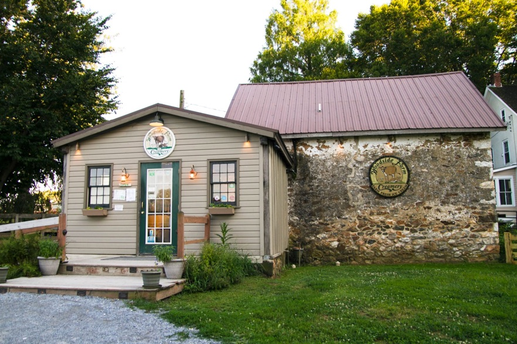

Farm-Fresh Homemade Ice Cream

Open 12 – 8 p.m. Daily
Woodside Farm Creamery has served the community farm-fresh, award-winning ice cream straight from our dairy cows since 1998. We hope you’ll stop in to visit the Creamery and say hello to our New Jersey cows!